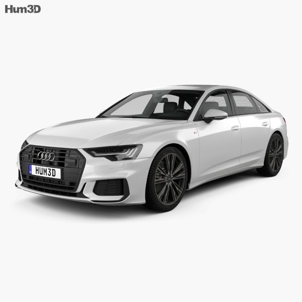
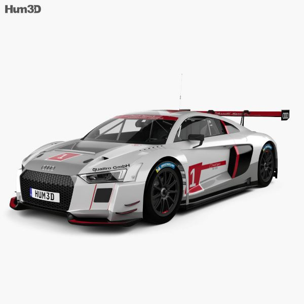
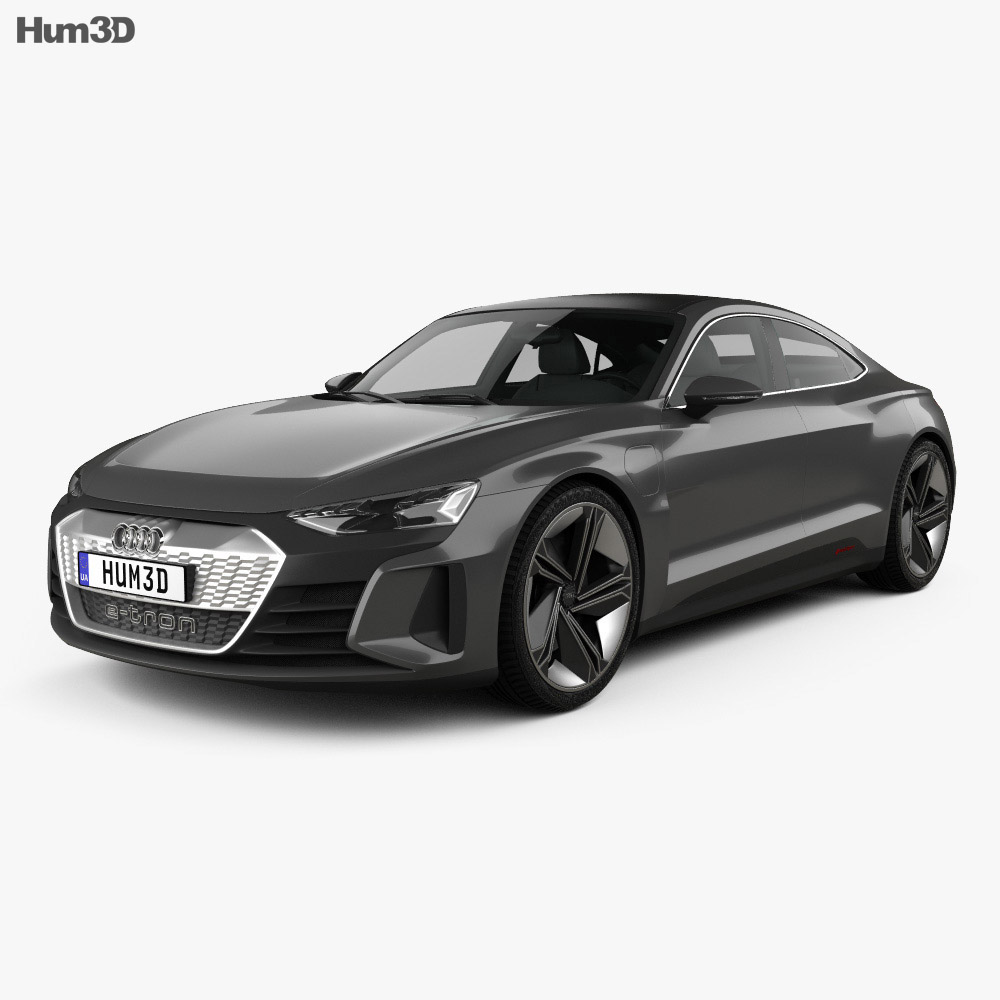
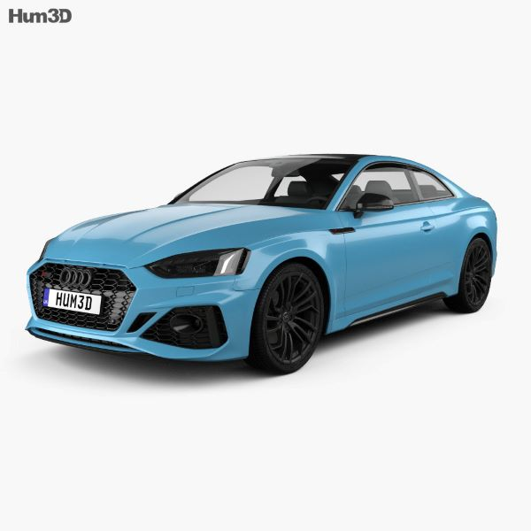
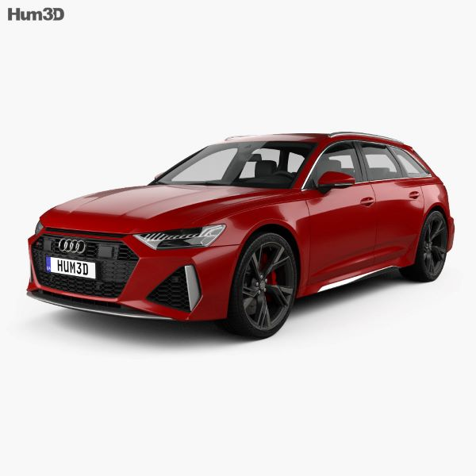
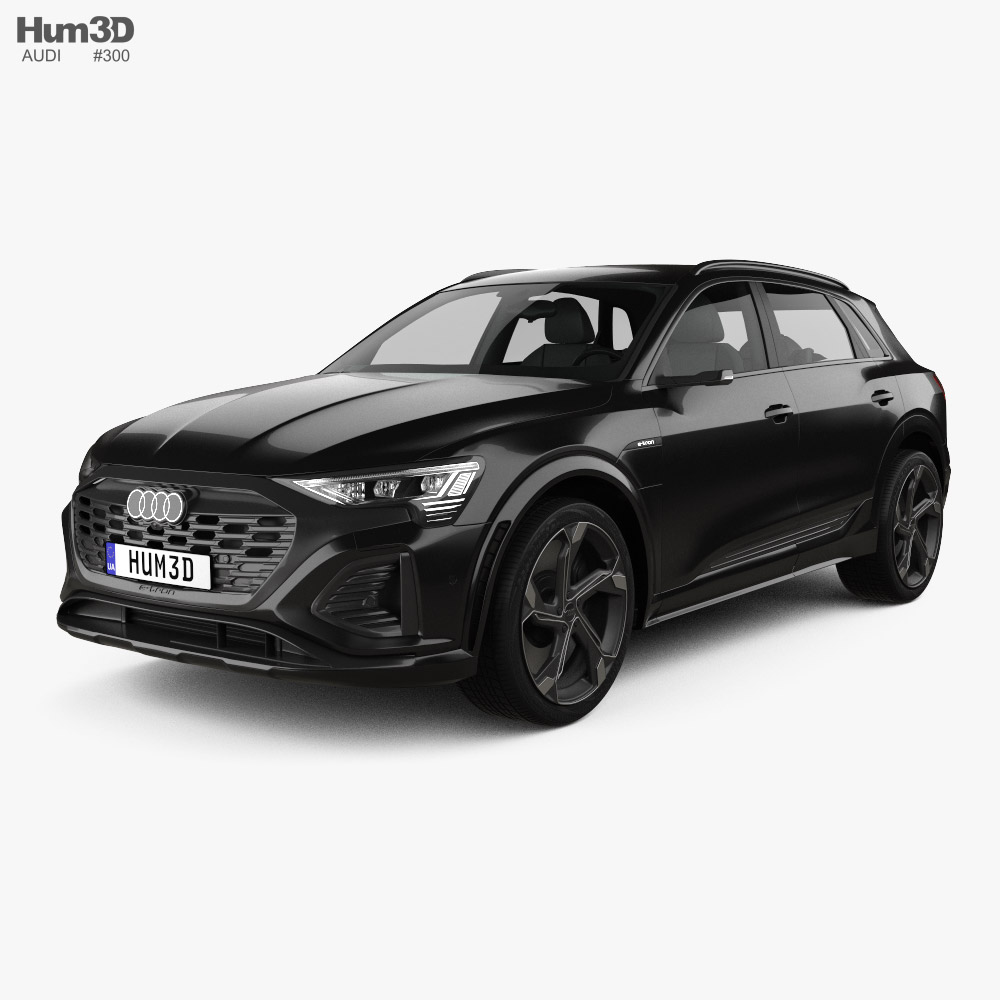

De Audi A6 is een luxe sedan die uitblinkt in elegantie, prestaties en geavanceerde technologie. Met een gestroomlijnd design, krachtige motoren en een hoogwaardig interieur biedt de A6 een comfortabele en stijlvolle rijervaring. Het voertuig is voorzien van geavanceerde veiligheidsvoorzieningen en moderne technologieën, waardoor het een ideale keuze is voor wie op zoek is naar een combinatie van verfijning en prestaties.
Alle modellen


Audi A6
Audi R8
De Audi R8 is een indrukwekkende sportwagen die uitblinkt in kracht, snelheid en verfijning. Met een opvallend ontwerp, krachtige motoren en geavanceerde technologieën biedt de R8 een sensationele rijervaring. Zowel het gestroomlijnde exterieur als het luxe interieur benadrukken de sportieve aard van deze iconische auto. Met geavanceerde rijhulpsystemen en veiligheidsvoorzieningen combineert de Audi R8 prestaties met gemoedsrust, waardoor het de ultieme keuze is voor liefhebbers van high-performance auto's.
Audi etron
De Audi e-tron is een baanbrekende elektrische SUV die innovatie, stijl en duurzaamheid samenbrengt. Met een geavanceerde elektrische aandrijflijn biedt de e-tron indrukwekkende prestaties en een emissievrije rijervaring. Het strakke design, hoogwaardige interieur en geavanceerde technologische functies maken deze SUV zowel praktisch als luxe. Voor wie op zoek is naar een milieubewuste en hoogwaardige elektrische auto is de Audi e-tron een vooruitstrevende keuze.
Audi RS5
De Audi RS5 is een opwindende high-performance sportwagen die kracht, snelheid en sportiviteit belichaamt. Met een krachtige motor, opvallend design en geavanceerde technologieën biedt de RS5 een adembenemende rijervaring. Zijn gestroomlijnde exterieur weerspiegelt de sportieve aard, terwijl het luxe interieur en geavanceerde functies een perfecte balans creëren tussen prestaties en comfort. Voor liefhebbers van sportieve auto's die op zoek zijn naar opwinding op de weg, is de Audi RS5 de ultieme keuze.
Audi RS6
De Audi RS6 is een sensationele high-performance sportwagen die kracht, snelheid en luxe combineert. Met een krachtige motor, opvallend sportief design en geavanceerde technologieën biedt de RS6 een adembenemende rijervaring. Zijn gestroomlijnde exterieur straalt sportiviteit uit, terwijl het luxe interieur en geavanceerde functies een perfecte harmonie vormen tussen prestaties en comfort. Voor liefhebbers van sportieve auto's die op zoek zijn naar ultieme snelheid en stijl op de weg, is de Audi RS6 de perfecte keuze. Meer info
Audi SQ8
De Audi SQ8 is een krachtige en luxueuze SUV die topprestaties combineert met verfijning. Met een krachtige motor, indrukwekkend design en geavanceerde technologieën biedt de SQ8 een opwindende rijervaring. Zijn gestroomlijnde exterieur straalt kracht uit, terwijl het hoogwaardige interieur en geavanceerde functies comfort en luxe bieden. Voor diegenen die op zoek zijn naar een SUV met sportieve prestaties en premium kenmerken, is de Audi SQ8 een uitstekende keuze.
